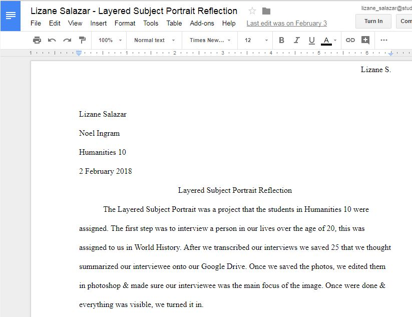
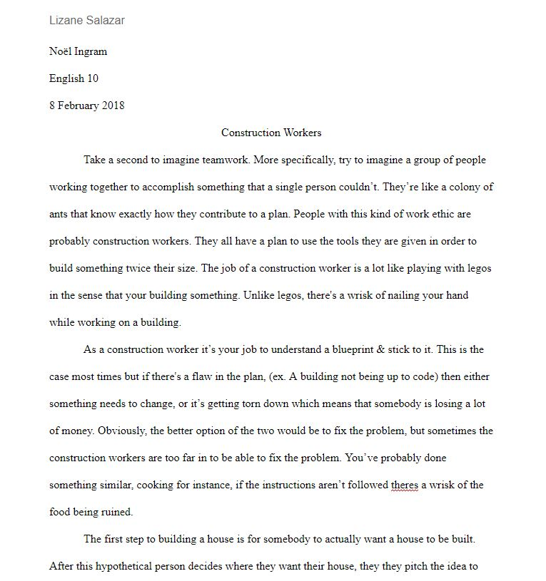
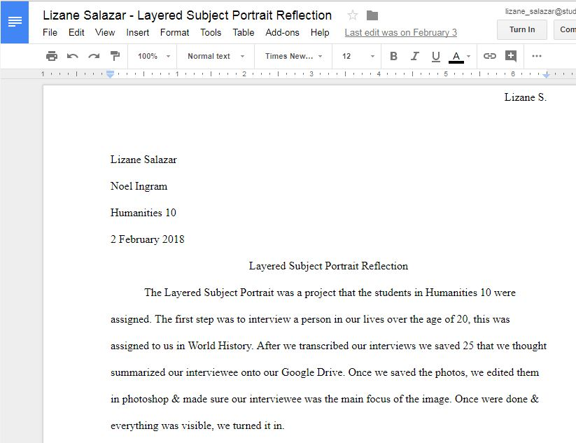
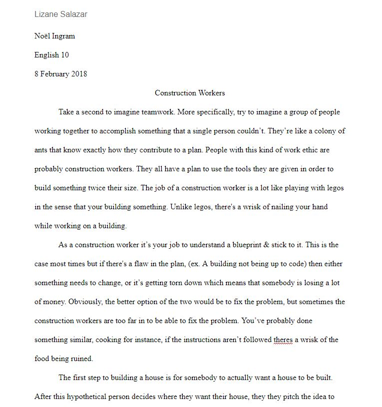

English <3 English <3 English <3 English <3
Clicking on any image in this page will take you to it's drive file.
 The Layered Subject Portrait was a project that the students in Humanities 10 were assigned. The first step was to interview a person in our lives over the age of 20, this was assigned to us in World History. After we transcribed our interviews we saved 25 that we thought summarized our interviewee onto our Google Drive. Once we saved the photos, we edited them in photoshop & made sure our interviewee was the main focus of the image.

This is the subject layered portrait reflection.It justifies my choices in the subject layered portrait

This is my English essay about architecture. It's about architecture because this subject was brought up during my interview.
Second English Page ... ... Second History Page
The Layered Subject Portrait was a project that the students in Humanities 10 were assigned. The first step was to interview a person in our lives over the age of 20, this was assigned to us in World History. After we transcribed our interviews we saved 25 that we thought summarized our interviewee onto our Google Drive. Once we saved the photos, we edited them in photoshop & made sure our interviewee was the main focus of the image.

This is the subject layered portrait reflection.It justifies my choices in the subject layered portrait

This is my English essay about architecture. It's about architecture because this subject was brought up during my interview.
Second English Page ... ... Second History Page